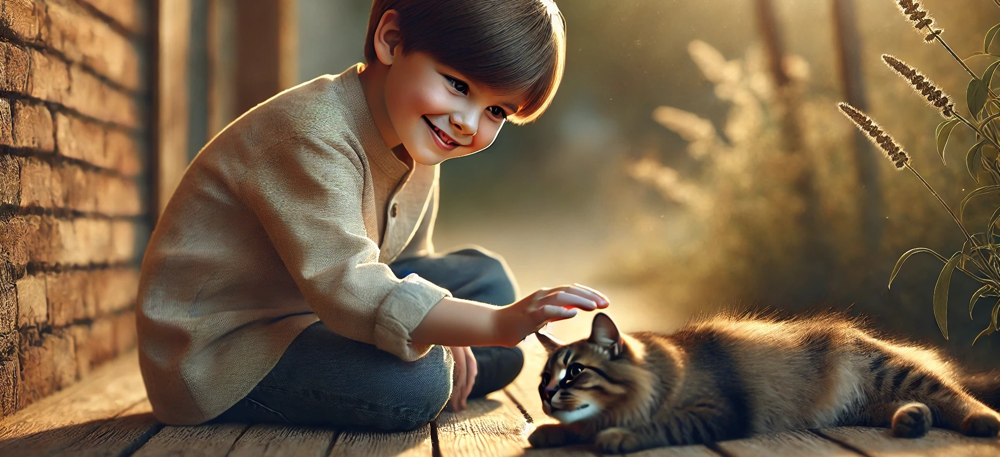

What Should a KG2 Child Know by the End of the Year?

Kindergarten 2
As children progress through KG2, their brains are blossoming with new skills in reading, writing, math, and critical thinking. This year is a crucial bridge between early learning KG1 and the more structured world of primary school.
By the end of KG2, your child should be well-prepared academically, socially, and emotionally to move confidently into Grade 1. Let’s take a closer look at what a KG2 child should know and be able to do by the end of the school year.
Literacy and Language Development
In KG2, literacy takes a big leap. By year’s end, your child should be able to:
⁕ Recognize all letters (uppercase and lowercase).
⁕ Know the letter sounds (phonics) and blend them to read simple CVC words (cat, dog, sun).
⁕ Read short sentences using sight words and phonics.
⁕ Understand and use punctuation like periods and question marks in writing.
⁕ Retell stories using beginning, middle, and end.
⁕ Read common sight words (around 50–100), such as: you, said, come, here, look, where.
⁕ Write simple sentences using phonetic spelling and some correct words.
⁕ Use spacing and capital letters in writing their name and sentences.
⁕ Listen attentively and respond to questions during read-alouds and class discussions.
Mathematics
In KG2, children begin to understand the logic of numbers and simple operations. By the end of the year, they should be able to:
⁕ Count forward and backward to 100.
⁕ Write numbers up to 100.
⁕ Compare numbers (greater than, less than, equal to).
⁕ Understand place value for tens and ones (23 is 2 tens and 3 ones).
⁕ Add and subtract numbers up to 10 (and sometimes 20).
⁕ Solve simple word problems using visuals or manipulatives.
⁕ Recognize and name 2D and 3D shapes (circle, triangle, cube, sphere, etc.).
⁕ Measure using non-standard units (how many blocks long is the pencil?).
⁕ Understand basic time (morning, afternoon, night; sometimes reading a clock to the hour).
⁕ Sort, classify, and graph objects by color, size, shape, or category.
Math is best learned through hands-on play! Count snacks, steps, or toys together.
Social and Emotional Development
KG2 children are developing more emotional maturity and responsibility. By the end of the year, they should be able to:
⁕ Follow multi-step directions.
⁕ Take responsibility for their belongings and classroom duties.
⁕ Use words to solve problems and resolve conflicts with peers.
⁕ Show empathy and kindness toward others.
⁕ Work independently on simple tasks and stay focused for 15-20 minutes.
⁕ Participate in group activities and cooperate with classmates.
⁕ Express feelings clearly and listen to others’ perspectives.
Fine and Gross Motor Skills
KG2 strengthens coordination, both big and small. Your child should be able to:
Fine motor skills:
⁕ Use a proper pencil grip.
⁕ Write words and numbers legibly.
⁕ Cut complex shapes with scissors.
⁕ Draw detailed pictures (with people, objects, and background).
⁕ Color neatly and stay within lines.
Gross motor skills:
⁕ Run, jump, skip, and hop with coordination.
⁕ Throw and catch a ball with accuracy.
⁕ Balance on one foot for several seconds.
⁕ Participate confidently in physical play or sports.
Encourage drawing, building blocks, and outdoor play to refine these skills.
Science and Social Studies
These subjects are explored through real-life experiences, play, and observation. By the end of KG2, your child should be able to:
⁕ Identify and describe the five senses.
⁕ Understand weather, seasons, and how they affect our lives.
⁕ Describe life cycles (of a butterfly, plant).
⁕ Sort objects into living and non-living.
⁕ Explore nature and make simple observations (plant growth, animal behavior).
⁕ Identify community helpers (doctor, police officer, teacher).
⁕ Talk about family traditions, homes, holidays, and basic cultural differences.
⁕ Understand basic needs (food, shelter, water, safety).
Art, Music, and Creativity
Creativity blooms in KG2! Children are encouraged to:
⁕ Use different materials to create art (paint, collage, crayons, clay).
⁕ Sing and move to music.
⁕ Follow rhythmic patterns and imitate sounds.
⁕ Engage in imaginative play and storytelling.
⁕ Act out simple skits or classroom dramas.
⁕ Express themselves confidently through creative outlets.
Celebrate every creation - it builds confidence and communication skills!
Technology Awareness
In tech-friendly classrooms, children may also:
⁕ Use simple apps or learning games.
⁕ Drag and drop items with a mouse or touchscreen.
⁕ Type their names or basic words on a keyboard.
⁕ Learn online safety basics: don’t share personal info, ask for help when unsure.
Use technology purposefully and balance it with real-world experiences.
Final Thoughts
KG2 is a year full of confidence-building and curiosity. Every child will develop at their own pace, and that's okay! The most important goal is to nurture a love for learning and prepare your child for the more structured expectations of Grade 1.
With encouragement, play, and the right support at home and school, your child will thrive.
Read ☛ Kg3 Checklist